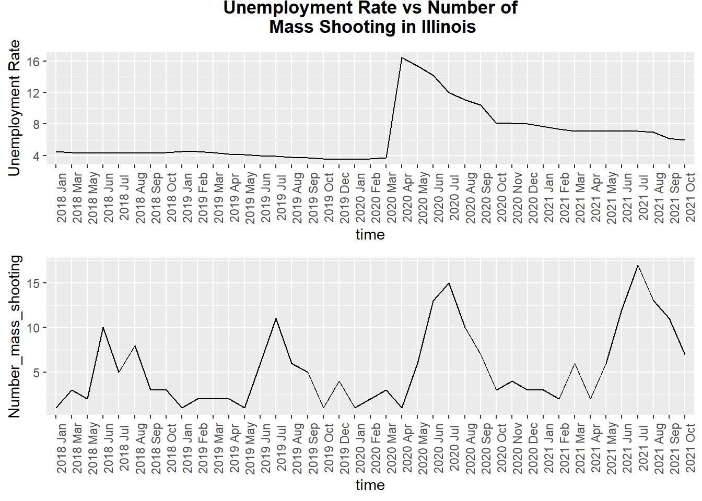

library(readr)
library(tidyverse)## ── Attaching packages ─────────────────────────────────────── tidyverse 1.3.1 ──## ✓ ggplot2 3.3.5 ✓ dplyr 1.0.7
## ✓ tibble 3.1.4 ✓ stringr 1.4.0
## ✓ tidyr 1.1.3 ✓ forcats 0.5.1
## ✓ purrr 0.3.4## ── Conflicts ────────────────────────────────────────── tidyverse_conflicts() ──
## x dplyr::filter() masks stats::filter()
## x dplyr::lag() masks stats::lag()library(ggplot2)
library(ggalt)## Registered S3 methods overwritten by 'ggalt':
## method from
## grid.draw.absoluteGrob ggplot2
## grobHeight.absoluteGrob ggplot2
## grobWidth.absoluteGrob ggplot2
## grobX.absoluteGrob ggplot2
## grobY.absoluteGrob ggplot2library(ggforce)
library(plotly)##
## Attaching package: 'plotly'## The following object is masked from 'package:ggplot2':
##
## last_plot## The following object is masked from 'package:stats':
##
## filter## The following object is masked from 'package:graphics':
##
## layoutlibrary(ggpubr)unemploy_gun <- read_csv("data/unemployment_gun.csv")## New names:
## * `` -> ...1## Rows: 911 Columns: 7## ── Column specification ────────────────────────────────────────────────────────
## Delimiter: ","
## chr (3): state, month, time
## dbl (4): ...1, value, year, number_mass_shooting##
## ℹ Use `spec()` to retrieve the full column specification for this data.
## ℹ Specify the column types or set `show_col_types = FALSE` to quiet this message.UNRATE <- read_csv("data/unemployment rate/UNRATE.csv")## Rows: 47 Columns: 2## ── Column specification ────────────────────────────────────────────────────────
## Delimiter: ","
## dbl (1): UNRATE
## date (1): DATE##
## ℹ Use `spec()` to retrieve the full column specification for this data.
## ℹ Specify the column types or set `show_col_types = FALSE` to quiet this message.unemploy_gun_IL = unemploy_gun %>%
filter(state == c("Illinois")) %>%
mutate(time=fct_inorder(time)) %>%
arrange(time)
plot_1 = unemploy_gun_IL %>%
ggplot(mapping = aes(x = time , y = value, group= 1)) +
geom_line()+theme(axis.text.x = element_text(angle = 90)) +
ylab("Unemployment Rate")+
labs(title = " Unemployment Rate vs Number of \n Mass Shooting in Illinois")+
theme( plot.title = element_text(colour = "black", face = "bold",
size = 13, vjust = 3, hjust = 0.5))
plot_2 = unemploy_gun_IL %>%
ggplot(mapping = aes(x = time , y = number_mass_shooting, group= 1)) +
geom_line()+theme(axis.text.x = element_text(angle = 90)) +
ylab("Number_mass_shooting")
figure <- ggarrange(plot_1, plot_2,
ncol = 1, nrow = 2)
figure
# We chose Minnesota for a more in-depth analysis. The top is the change in the unemployment rate in Minnesota, and the bottom is the change in the number of shootings. First of all, we can find that the number of shootings has obvious periodic changes, and the number of shootings in the summer is obviously high throughout the year. However, it can still be found that the peak after the epidemic has increased significantly, and the number of shootings during the same period has also increased significantly. At the same time, the unemployment rate has always been higher than the value of the unemployment rate under healthy economic conditions. Therefore, we infer that the two variables are still correlated.
plot_us = UNRATE %>%
ggplot(mapping = aes(x = DATE , y = UNRATE, group= 1)) + theme_bw()+
geom_line() +
ylab("Unemployment Rate")+
xlab("Time")+
labs(title = " Unemployment Rate in US")+
theme( plot.title = element_text(colour = "black", face = "bold",
size = 13, vjust = 3, hjust = 0.5))
plot_us# With the increase in shootings, we have paid more attention to shootings and became interested in what factors have affected the sharp increase in shootings. First of all, a set of data from major news newspapers enters our field of vision. Every day we can see reports of unemployment rate in the news. It is very interesting that the unemployment rate has been increasing since the outbreak of the new crown epidemic, which has the same trend as the increase in shootings. Therefore, we mapped the changes in the unemployment rate in the United States two years before and after the outbreak of the new crown. From this picture, we can see that two months after the outbreak of the new crown, the unemployment rate began to increase significantly, which is related to the self-quarantine policy that was just started. Later, society began to adapt to the epidemic, and there was a corresponding decline. However, because the epidemic caused structural damage to the economy, the unemployment rate has remained at a high level ever since.
#
#
# ggplot(mpg, aes(displ, hwy)) +
# geom_point() +
# scale_y_continuous(
# "mpg (US)",
# sec.axis = sec_axis(~ . * 1.20, name ="mpg (UK)")
# )
# ggplot()
# unemploy_final =
# unemploy_state %>%
# filter(year!=2017)%>%
# mutate(month=str_replace(month," ",""))
#
#
# year_month_state_massshooting <- read_csv("data/year_month_state_massshooting.csv") %>%
# select(-...1) %>%
# mutate(year = year + 2000)
#
#
# unemploy_gun = left_join(year_month_state_massshooting,unemploy_final, by = c("month" = "month", "state"= "state", "year" = "year") ) %>%
# drop_na()
# write.csv(unemploy_gun, "data/unemploy_gun.csv")
#
# unemploy_gun_IL = unemploy_gun %>%
# filter(state == c("Illinois")
#
# unemploy_gun_FIVE = unemploy_gun %>%
# filter(state == c("Illinois", "New York", "California", "Texas", "Ohio", "Pennsylvania"))
#
# unemploy_gun_NY = unemploy_gun %>%
# filter(state == "New York")
#
# unemploy_gun_FIVE %>%
# ggplot(aes(x = value, y = number_mass_shooting)) +
# geom_point(aes(color = state), alpha = .5)+
# theme(legend.position = "bottom")
#
# ggplot(unemploy_gun_IL, aes(x = value, y = number_mass_shooting)) +
# geom_point(aes(color = state), alpha = .5)+
# theme(legend.position = "bottom")
# lm(number_mass_shooting~value,unemploy_gun_IL)
#
# ggplot(unemploy_gun_NY, aes(x = value, y = number_mass_shooting)) +
# geom_point(aes(color = state), alpha = .5)+
# geom_smooth(method = "lm", se = FALSE)+
# theme(legend.position = "bottom")
# lm(number_mass_shooting~value,unemploy_gun_NY)
#
# ggplot(unemploy_gun_NY, aes(x = value, y = number_mass_shooting)) +
# geom_point(aes(color = state), alpha = .5)+
# geom_abline()+
# theme(legend.position = "bottom")
# lm(number_mass_shooting~value,unemploy_gun_NY)
#
# ggplot(unemploy_gun, aes(x = value, y = number_mass_shooting)) +
# geom_point(aes(color = state), alpha = .5)+
# theme(legend.position = "bottom")